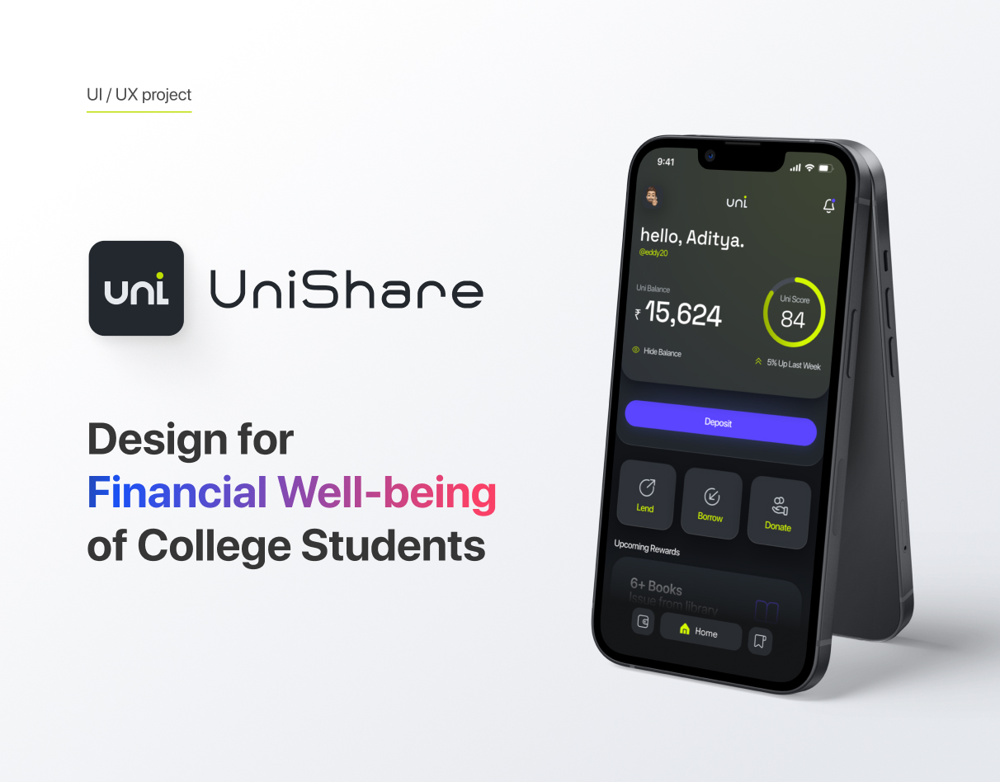

UniShare App
Designed end-to-end ride-sharing experience for 5,000+ students, reducing booking friction by 40%.
Role
Lead Product Designer
Timeline
3 Months
Tools
Figma, Principle
Impact
40% drop in booking time, 5k+ active users

The Problem
University students often struggle to find safe, reliable, and affordable rides for weekend trips or daily commutes. Existing ride-sharing platforms are expensive, while informal carpooling via WhatsApp groups is chaotic and lacks trust.
Research & Insights
I conducted interviews with 30+ students and mapped their existing journeys. The core insight was that trust is the primary currency. Students don't just want a ride; they want to know they are traveling with a verified peer.
"I'd rather pay 20% more for an Uber than get into a stranger's car from a Facebook group, unless I can verify they go to my school." — Student Interview
Design Process & Solution
The solution focused on a friction-less verified onboarding system and a clear, map-based discovery interface. By integrating university SSO, we solved the trust issue immediately.
The core booking flow was reduced from an average of 14 taps (in competitor apps) to just 5 taps, significantly reducing the drop-off rate.
Results & Takeaways
The MVP was tested with a closed beta of 500 students, eventually scaling to 5,000+. Booking friction dropped by 40%, and the platform facilitated over 2,000 shared rides in the first semester.
Key Takeaway: Designing for trust is just as important as designing for utility. The SSO integration was the most technically challenging but UX-critical feature.